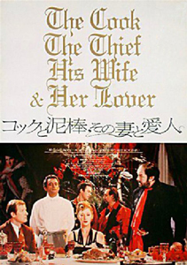
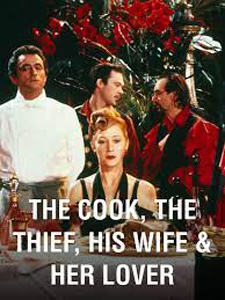
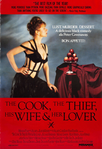
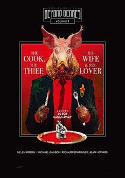
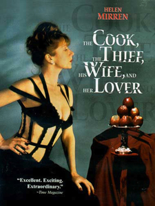
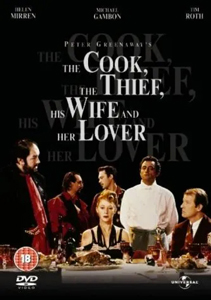

English gangster Albert Spica has taken over the high-class Le Hollandais restaurant, managed by French chef Richard Boarst. Spica makes nightly appearances at the restaurant with his retinue of thugs. His oafish behaviour causes frequent confrontations with the staff and his own customers, whose patronage he loses, but whose money he seems not to miss. Forced to accompany Spica is his reluctant, yet elegant wife, Georgina, who soon catches the eye of a quiet regular at the restaurant, bookshop owner Michael. Under her husband's nose, Georgina carries on an affair with Michael with the help of the restaurant staff.
Ultimately Spica learns of the affair, forcing Georgina to hide out at Michael's book depository. Boarst sends food to Georgina through his young employee Pup, a boy soprano who sings while working. Spica tortures the boy before finding the bookstore's location written in a book the boy is carrying. Spica's men storm Michael's bookshop while Georgina is visiting the boy in hospital. They torture Michael to death by force-feeding him pages from his books. Georgina discovers his body when she returns. Overcome with rage and grief, she begs Boarst to cook Michael's body, and he eventually complies. Together with all the people that Spica wronged throughout the film, Georgina confronts her husband finally at the restaurant and forces him at gunpoint to eat a mouthful of Michael's cooked body. Spica obeys, gagging. Georgina then shoots him in the head, calling him a cannibal.
Richard Boarst, "The Cook"



Jean-Paul Gaultier designed the costumes. Italian chef Giorgio Locatelli prepared the food used as props.
The filming is inspired by Flemish Baroque painters such as Peter Paul Rubens or Anthony van Dyck. The Banquet of the Officers of the St George Militia Company in 1616, a painting by Frans Hals appears on the restaurant wall.
The film's original running time was 124 minutes. Due to the content, the MPAA gave Miramax a choice of either an X rating or go unrated (adults only) for theatrical release. Unrated was chosen in light of the X rating being more associated with pornographic films. Two versions of the film were released on VHS in the 1990s. One was an R-rated cut running 95 minutes (mainly for large video store chains); the other was the original version.


